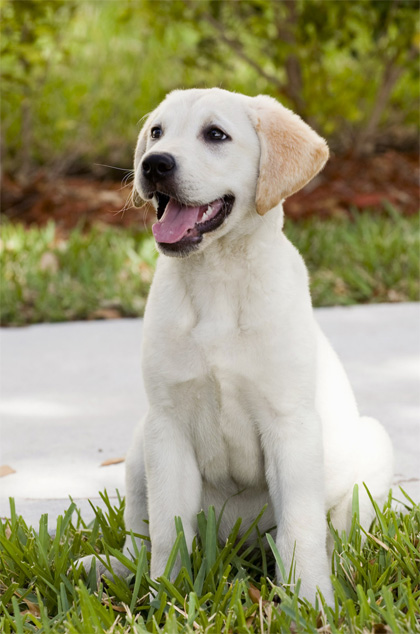
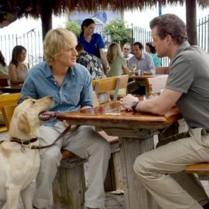
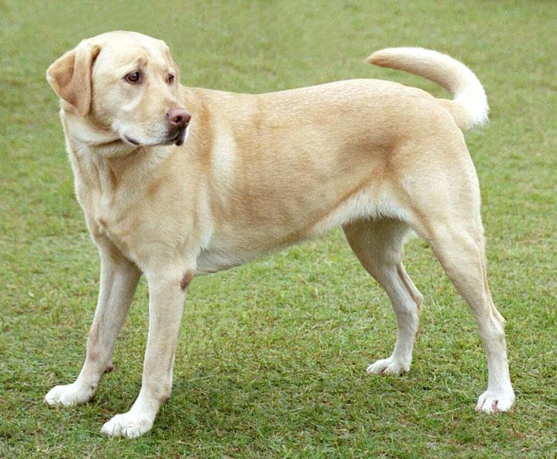
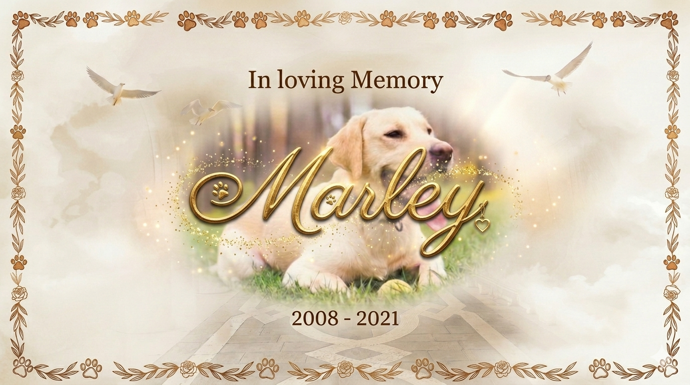

Frammenti di Vita









Questo spazio è dedicato a Marley, il nostro "uragano di luce". Non è un sito di addio, ma un invito a sorridere ricordando la vita straordinaria di un cane che ha ridefinito il concetto di famiglia.
Tutto ebbe inizio in un pomeriggio di primavera, quando un piccolo batuffolo color miele varcò la soglia di casa. Non camminava, rimbalzava. Marley non era solo un cucciolo di Labrador; era un’esplosione di energia vitale racchiusa in quattro zampe troppo grandi per il suo corpo goffo.
Fin dal primo giorno, Marley chiarì la sua missione: nessuno in quella casa sarebbe mai più stato solo o triste. Con la sua coda, che batteva contro i mobili come un tamburo festoso, scandiva il ritmo di una nuova vita.
Marley non aveva bisogno di parole per comunicare. Gli bastava poggiare il muso umido sulle ginocchia di chiunque sembrasse pensieroso, o lanciare quel suo sguardo languido che scioglieva anche i cuori più duri.
Le Mattine: Erano fatte di risvegli "ruvidi", con la sua lingua che fungeva da sveglia infallibile e quel musetto che spuntava da sotto le coperte.
Le Passeggiate: Ogni uscita era un’avventura epica. Per Marley, ogni filo d’erba meritava un’indagine e ogni passante era un potenziale nuovo migliore amico a cui regalare una scodinzolata.
Il Conforto: Sapeva sempre quando il silenzio in casa era "pesante". In quei momenti, si sdraiava silenzioso sui piedi dei suoi umani, diventando un’ancora di calore e stabilità.
La famiglia non lo considerava "il cane di casa", ma il cuore pulsante della famiglia stessa. Marley era il custode dei segreti sussurrati nelle sue orecchie morbide e il compagno instancabile di mille giochi in giardino.
Gli anni sono passati veloci, come un inseguimento felice dietro a una pallina da tennis. Marley è invecchiato con la grazia dei saggi, con il muso che si è fatto bianco come la neve, ma con gli occhi che hanno mantenuto fino all'ultimo la stessa scintilla di quel primo giorno.
Quando è arrivato il momento di salutarlo, non c’è stato spazio per il rimpianto. Certo, il silenzio che ha lasciato inizialmente sembrava strano, ma è stato subito riempito dai ricordi.
Marley non se n'è andato davvero. Vive ancora:
In quel graffio sul parquet che fa sorridere invece di arrabbiare.
Nelle foto in cui appare sempre con le orecchie al vento e un'espressione buffa.
In quel modo di amare incondizionatamente che ha insegnato a tutta la famiglia.
Oggi, quando la famiglia parla di lui, non lo facevano con le lacrime agli occhi, ma con un calore nel petto. Parlano di quanto fosse buffo quando cercava di acchiappare le mosche o di come riuscisse a farsi perdonare ogni marachella con un semplice battito di coda.
Marley ha compiuto la sua missione. Ha insegnato che l'amore non ha bisogno di istruzioni, che la felicità si trova in una corsa nel prato e che un amico fedele resta con te per sempre, impresso in ogni battito del cuore.
Grazie, Marley, per averci mostrato quanto può essere luminoso il mondo visto attraverso i tuoi occhi.



Un piccolo gesto per tenere viva la luce del suo ricordo.
"Un cane non se ne fa niente di macchine costose... Un bastone marcio è sufficiente."
In onore di Marley, puoi sostenere chi ancora è in cerca di una casa.
Sostieni il Canile Locale (Demo)"A Marley, il nostro raggio di sole a quattro zampe. La casa è più silenziosa senza il tuo passo, ma la nostra vita è infinitamente più ricca per averti avuto accanto. Per sempre il nostro bravo ragazzo."